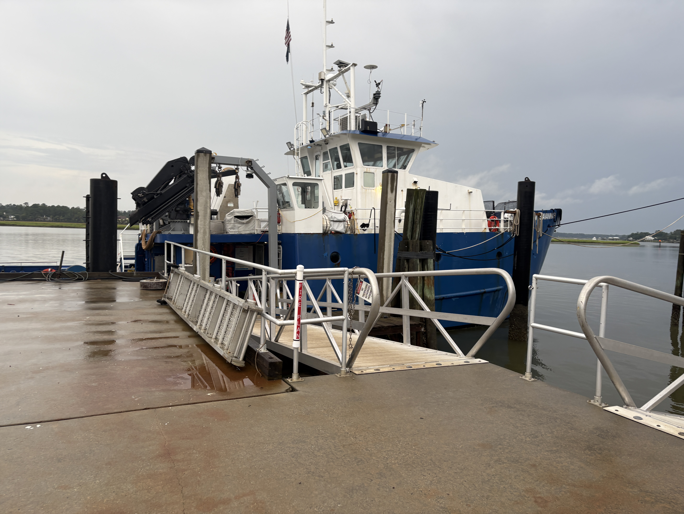
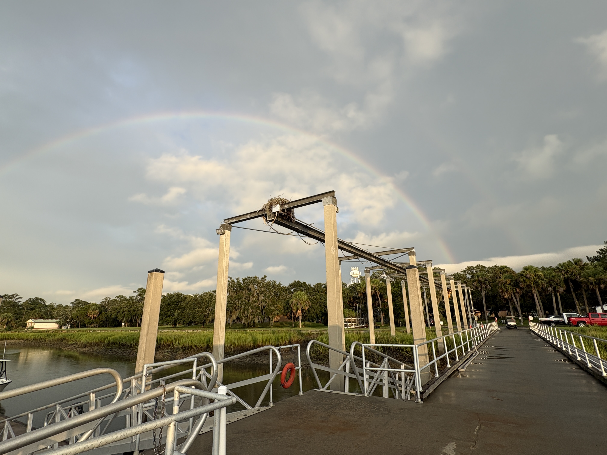
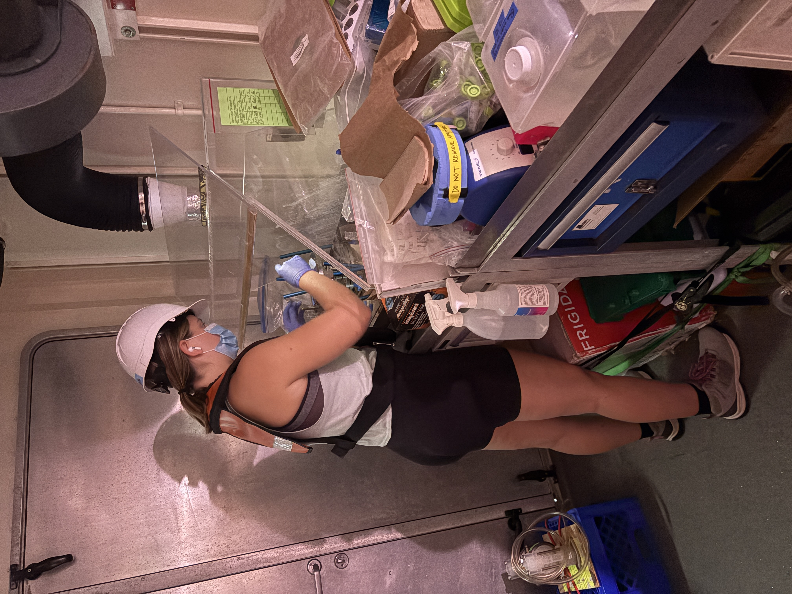
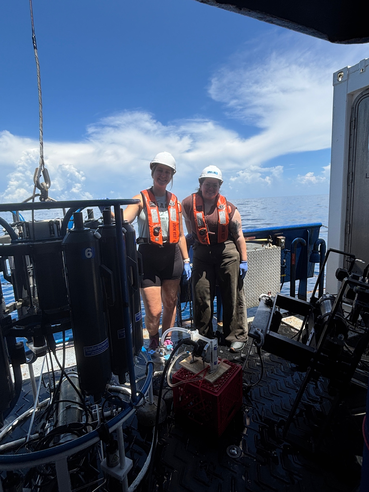
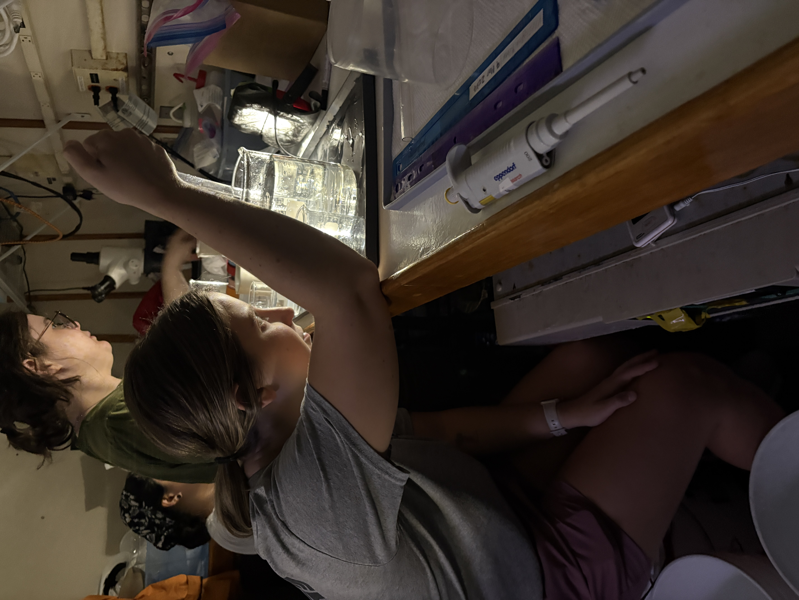
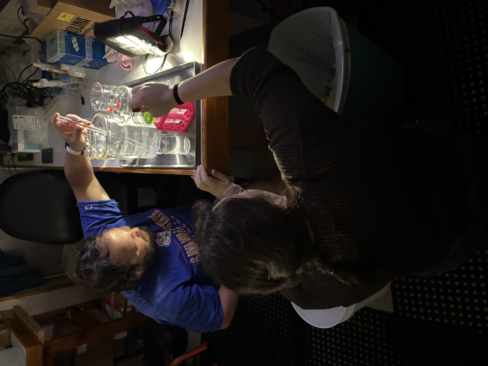
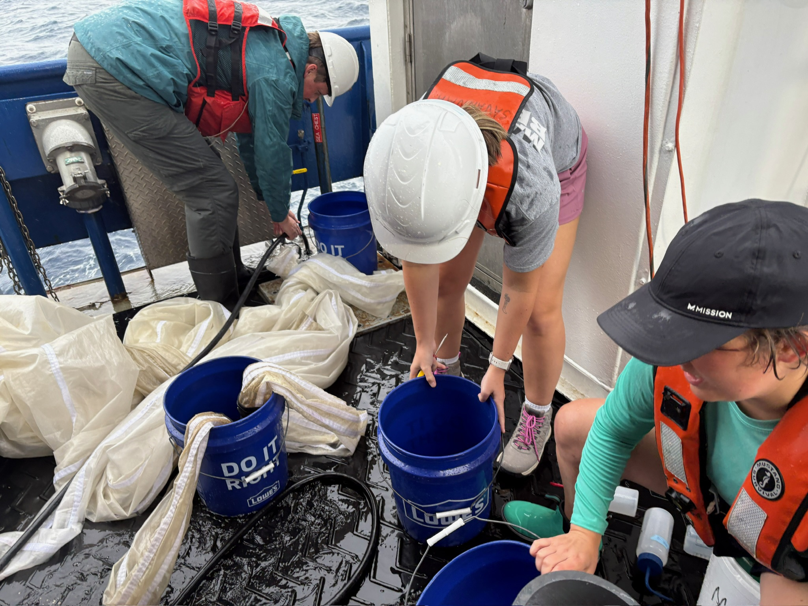
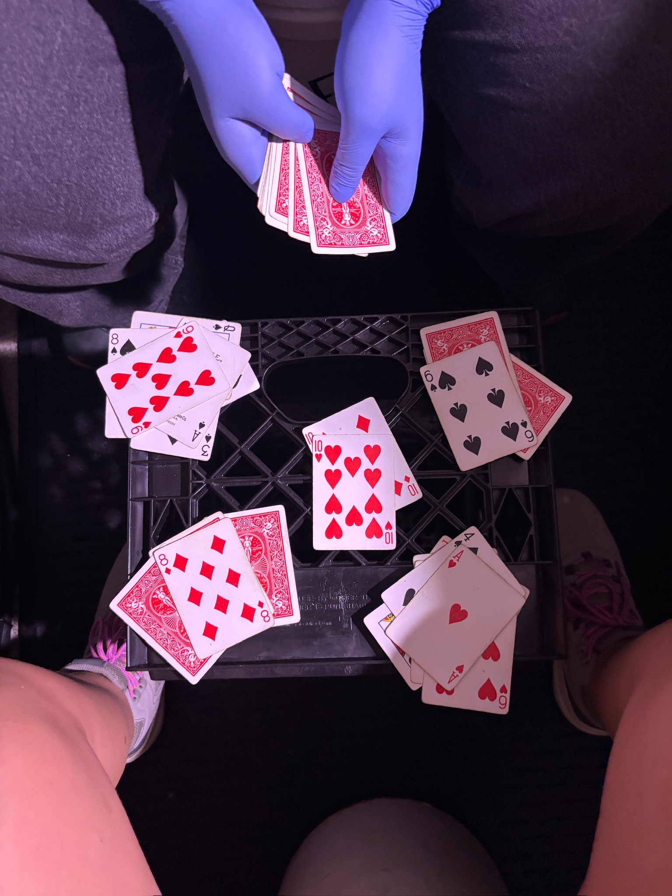
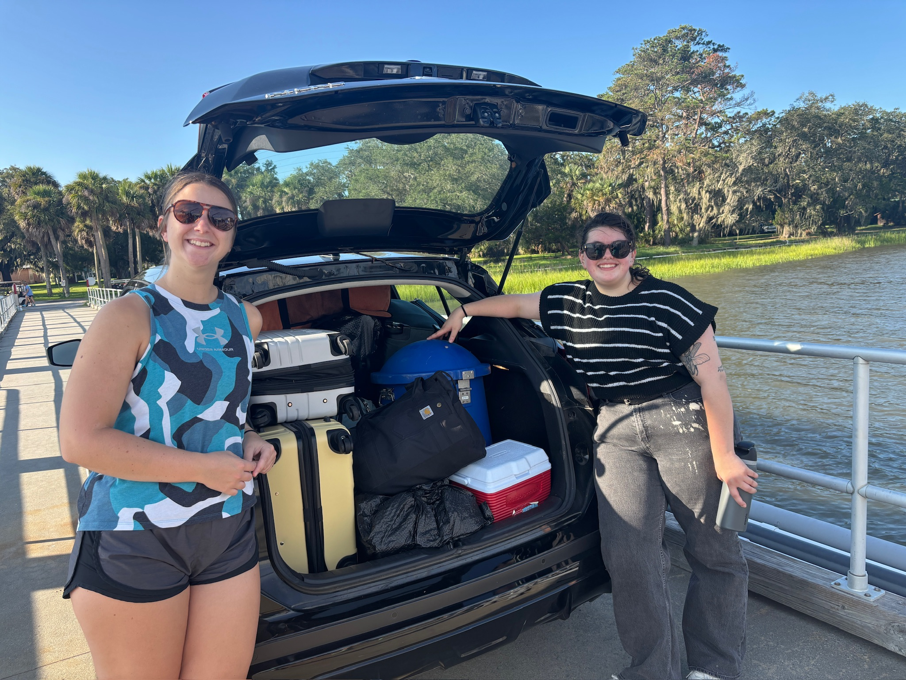

The Ohio State University
Summer 2026 | Julia Nuss

The R/V Savannah at the dock before the DolLAYER cruise.
Ahoy, friends!
Amid our lab's move from the University of South Carolina to The Ohio State University, Jordan and I had the opportunity to join the final DolLAYER cruise with investigators Marc Frischer, Adam Greer, and the many other wonderful researchers of SKIO (Skidaway Institute of Oceanography). The Doliolideer gang, as Marc affectionately calls the team, planned a series of cruises in the South Atlantic Bight (SAB) to investigate how the oceanographic processes that structure the water column also help shape the zooplankton community, including doliolids and salps, and consequently the pelagic food web. The Peng Lab has a vested interest in the SAB as part of a new and exciting project investigating how fungal communities and their activity shift seasonally and between eutrophic and oligotrophic regions of the ocean. We were doubly interested in the Doliolideer gang's work because the pelagic tunicates they were searching for are made of cellulose, a material that fungi might be uniquely suited to break down!

A double rainbow, if you look closely, from the R/V Savannah dock.
Jordan and I arrived a day early at SKIO in Savannah, Georgia. I drove down from Charleston, always a beautiful drive along the coast, and picked up Jordan from the airport on the way to the ship. Marc met us at the R/V Savannah, we loaded our things aboard, and then he gave us a tour. With the rest of the day to spare, Jordan and I went to see the new Spider-Man: Brand New Day movie (10/10, by the way), and then we met Marc for dinner. The plan was originally to leave bright and early on August 3 for a 10-day research cruise, but Lady Luck had other plans. We were delayed nearly a full day by a variety of scheduling and equipment issues. All was well, though, and by the time we left, everything was literally all dolphins and rainbows.

Jordan processing a filter from the fast-filtration rig in the shared-use UNOLS lab van.
There was a long list of complications once we got out to sea, namely weather and equipment issues. The SAB gets a little rocky this time of year, and that got the better of us on our first day on the water. By day two, however, we were back to full capacity and ready to work! We hit a storm midway through our journey that halted all work for about a day and a half, so we parked the ship just off St. Augustine, Florida. Everyone experienced their own equipment troubles, but our battle involved the van where we worked on the aft deck. Electrical issues left the van as a big metal box with bench space and a few extension cords from the ship for our equipment, but Jordan and I prevailed, and at least we weren't cold.

Jordan (left) and Julia (right) with the CTD. Photo by Katelyn Bittle.

Jordan (foreground) picking tunicates with help from Sarah and Alyssa (background).

Julia (foreground) picking tunicates with Michael (background).

Adam, Jordan, and Nele (left to right) processing MOCNESS collections.
The DolLAYER crew was certainly a well-oiled machine, but Jordan and I found our footing and learned a ton by helping wherever we were needed. By the end, we were basically professional MOCNESS helpers, and we even learned how to pick doliolids and salps! Our work centered on filtering seawater from CTD casts at different depths, usually around 10 and 35 meters. We filtered the seawater through 0.2 µm filters and then flash-froze the filters in liquid nitrogen for later DNA and RNA extraction. We also prepared incubations using seawater with 13C- and 12C-labeled cellulose and diatoms for DNA-SIP. The end of that experiment made for a fun-filled overnight session of filtering and freezing, but Jordan DJ'd for us, taught me a new card game, and we even caught the sunrise.

Julia and Jordan playing War during their overnight filtering extravaganza.
Naturally, we weren't filtering seawater 24/7, but there was no shortage of ways to spend our free time. Most importantly, mealtime: a special shout-out to chef Ben, who treated us to top-tier food! My personal favorite was Enchilada Night. We also got to celebrate a birthday on board for Katelyn, an undergraduate assistant from Nova Southeastern University; Ben, of course, made cupcakes. Jordan and I befriended the many graduate students from SKIO, and we affectionately earned the nickname the "fun-gals"; shout-out to Alyssa and Sarah for coming up with that. Many evenings were spent playing card games, solving crossword puzzles, and watching movies. A special thanks goes to Morgan, the beloved marine technician, who let us watch movies from her laptop.

Jordan (left) and Julia (right) in front of a freshly packed car full of lab equipment. Photo by Marc Frischer.
We returned to SKIO bright and early and were packed and off the ship by 9 a.m. I want to thank Captain TJ Dodge and the crew: Morgan, Ben, Jackson, Sean, and Terrell. I would also like to give a final shout-out to the amazing team of researchers on this cruise: PIs Adam Greer and Marc Frischer, along with the wonderful graduate students, undergraduate student, and postdoc Gabi, Nele, Alyssa, Sarah, Michael, Katelyn, and Sean. This was a truly unforgettable experience with unforgettable people! Under normal circumstances, this would make for bittersweet goodbyes, but we'll be back at SKIO in just six months, and we look forward to making our rounds and seeing everyone again.
Best fishes,
Julia Nuss